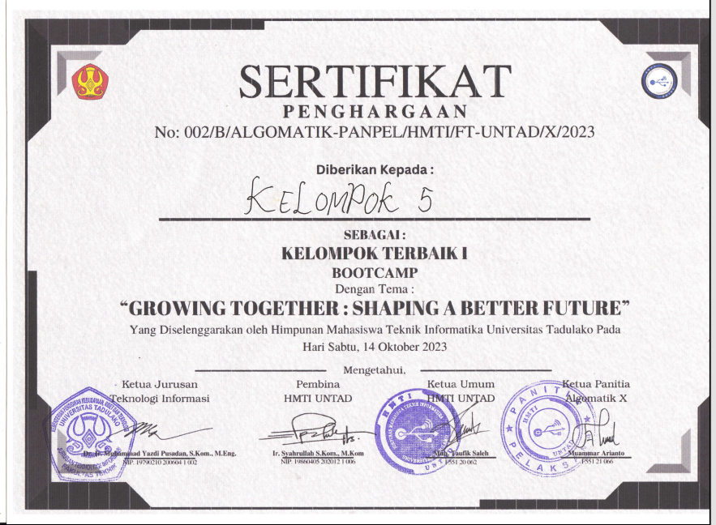

About Me
Halo! Saya Putri Casiola Mokodongan. Saya adalah seorang mahasiswa S1 Teknik Informatika dari Universitas Tadulako. Saya sangat menyukai dunia teknologi dan musik, saya juga seorang Swiftie yang selalu terinspirasi oleh lirik-lirik Taylor Swift.
Portofolio
Berikut adalah proyek yang pernah saya kerjakan dan berpartisipasi di dalamnya:
